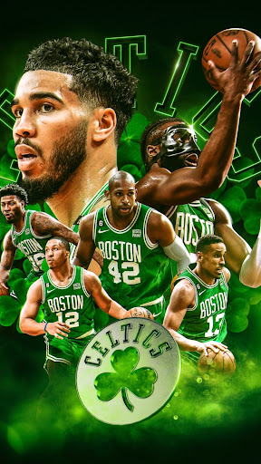
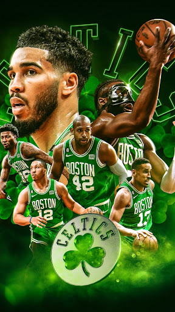
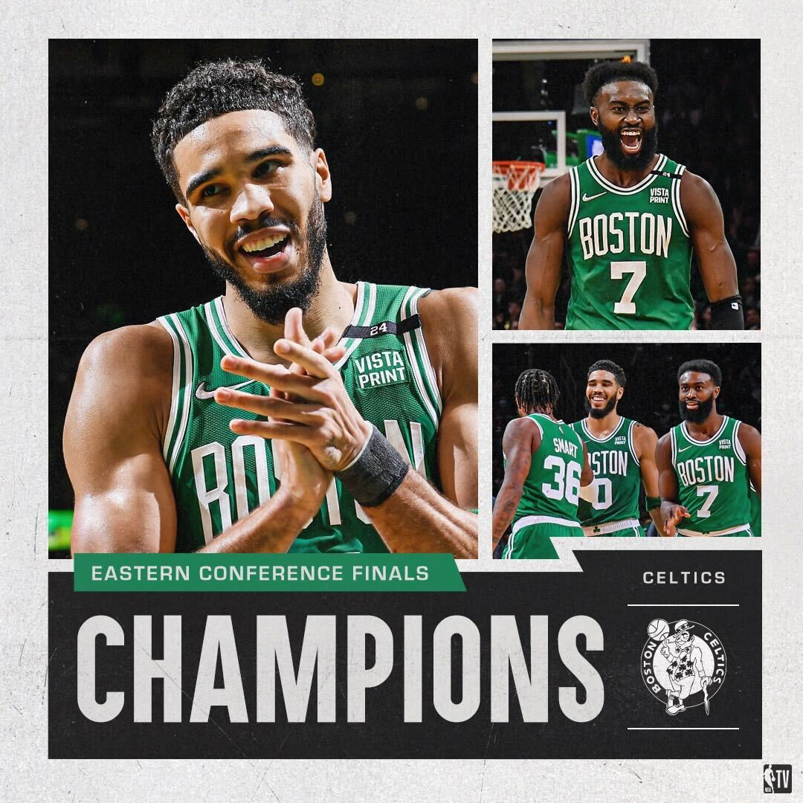
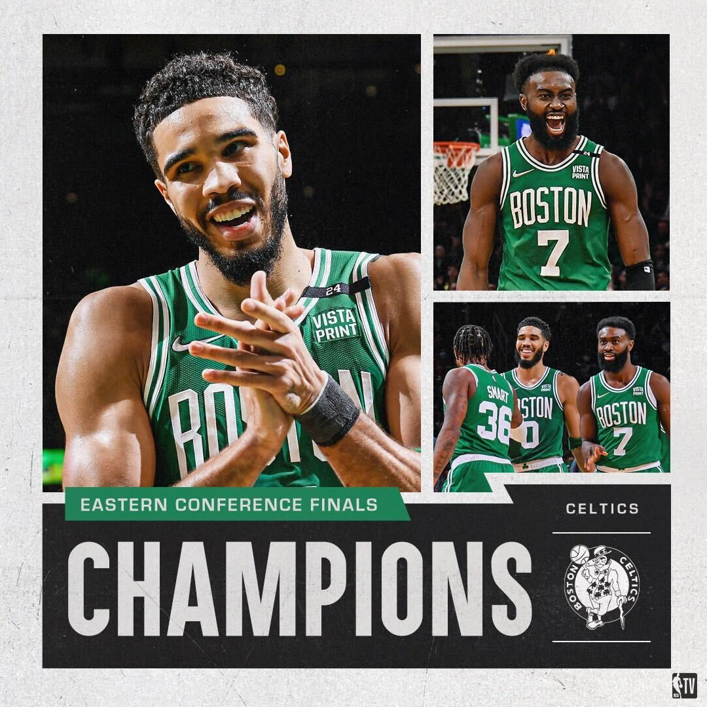

 

Jugaron contra jugadores lesionados, equipos sin sus estrellas, rivales que no deberían estar en
finales de conferencia. Vendieron mil narrativas contra estos Celtics, pero la realidad es que han
sido desde el primer día de la temporada el mejor equipo del Este y de la NBA, y son merecedores de
estar en las finales de la NBA. Son 64 triunfos en temporada regular y un récord de 12-2 en
postemporada tras barrer a Indiana (105-102) en las finales de la conferencia Este. Segundas finales
en tres años tras la derrota de 2022, y quedándose a solo un partido el curso anterior. Y esta vez
no quieren quedarse a las puertas, ya sea Dallas o los Minnesota Timberwolves firmen una remontada
histórica.
Ganado a pulso. En tres de los cuatro partidos, Boston estaba por debajo del marcador a falta de
cinco minutos y acabó barriendo la serie. Se llevó los cuatro con la sensación de pisar el
acelerador en momentos puntuales de la serie, y que la defensa ha sido suficiente ante unos Pacers
que en los minutos calientes se desmoronaron sin su estrella. Influyó, y mucho, el nivel defensivo
de los Jrue Holiday, Derrick White o Jaylen Brown para anular a uno de los mejores ataques de la
historia. Cualquier duelo en las finales será otra historia, pero hasta la fecha Boston ha ganado
doce de los 14 partidos en playoff, invicto como visitante y tendrá 10 días de descanso, hasta el 6
de junio. Sin importar cuando acabe la eliminatoria en el Oeste.

Recibió el título de campeón del Este Wyc Grousbeck, principal propietario de la franquicia, que
quiso acordarse de Bill Walton en su discurso, leyenda de los Celtics. Y el micrófono pasó por casi
todos, tras el MVP y Tatum. Fue turno de Horford, quien cumplirá 38 años días antes de las finales,
Jrue Holiday o Joe Mazzulla, que en su segunda campaña buscará por fin el ansiado anillo que ni Brad
Stevens, ahora su jefe, ni Ime Udoka, a quien relevó en el cargo, pudieron conseguir. Y todo
mientras esperan la vuelta de un Kristaps Porzingis que se ha perdido las series ante Cleveland y
Orlando enteras. Debería volver para las finales, darle una mejor versión a un equipo que suma un
76-20 esta temporada.
Serán las finales número 23 para Boston, con 17 anillos y cinco derrotas. El objetivo será romper el
empate con Los Angeles Lakers en lo más alto de la clasificación, volver a la cima del baloncesto.
Algo que no logran desde 2008, demasiado tiempo. Demasiados intentos por el camino, perdiendo las
finales de 2010 primero y 2022 con este mismo proyecto, quedándose a las puertas de la serie por el
título otras seis veces. En sus manos está la oportunidad de que este 2024 sea diferente, de que sea
por fin el año de cerrar 16 temporadas de sequía. En las de Tatum, Jaylen Brown y Joe Mazzulla.